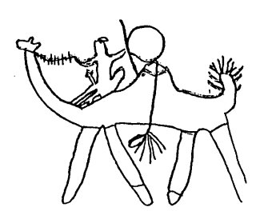
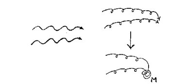
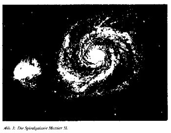

| Home
| Entstehung
und Ausbreitung des Patriarchats |
Spiralform, Lebensenergie | Duesbergs Kritik der Virus-AIDS-These und der Bezug zu Reich | |
|||
|
»emotion 10«
|
|||
|
|
||
|
|
||
|
Das
vorliegende Papier faßt das Beweismaterial und die Schlüsse meiner siebenjährigen
geographischen Studie über die weltweite Verwüstung regionaler Verschiedenheiten
menschlichen Verhaltens und den damit zusammenhängenden
sozialen und Umweltfaktoren zusammen. Diese Studie legte den Grundstein
zu meiner Doktorarbeit (1) (DeMeo
1986, 1987, 1988). In
dieser Untersuchung konzentrierte ich mich besonders auf einen größeren Komplex
traumatischer und unterdrückender Haltungen, Verhaltensweisen, sozialer
Gewohnheiten und Institutionen, die mit Gewalt und Krieg zusammenhängen.
Meine Studie geht von klinischen und kulturvergleichenden (cross-cultural)
Beobachtungen biologischer Bedürfnisse bei Säuglingen, Kindern und Jugendlichen
aus; den unterdrückenden und zerstörerischen Folgen, die bestimmte
soziale Institutionen und harte Umweltbedingungen für diese Bedürfnisse
haben, sowie den Konsequenzen, die sich für das Verhalten aus dieser Unterdrückung
und Zerstörung ergeben. Der
geographische Zugang zu den Ursprüngen menschlichen Verhaltens, wie
er hier vorgestellt wird, hat die Rekonstruktion eines viel klareren
globalen Bildes
eines großen Teiles unserer alten Kulturgeschichte erlaubt, als dies bisher
möglich war. Die kausale Beziehung zwischen traumatischen und repressiven
sozialen Institutionen sowie destruktiver Aggression und Krieg ist durch meinen
Versuch verifiziert und bekräftigt worden. Dies
bestätigt die Existenz einer alten, auf der ganzen Welt vorhandenen Periode
relativ friedlicher sozialer Bedingungen, in der Krieg, Männerherrschaft und
destruktive Aggression entweder fehlten oder in sehr geringem Ausmaß vorhanden
waren. Außerdem ist es möglich gewesen, sowohl die exakten Zeiten als
auch die Orte auf der Erde festzulegen, wo menschliche Kulturen sich erstmalig
von friedlichen, demokratischen, gleichberechtigten Lebensbedingungen in
gewaltvolle, kriegerische, despotische Lebensbedingungen verwandelten. Diese
Befunde waren nur möglich aufgrund von neueren paläoklimatischen und archäologischen Feldstudien, die früher übersehene soziale und
Umweltbedingungen offenbarten,
sowie der Entwicklung einer riesigen globalen Datensammlung, die sich aus den anthropologischen Daten von hunderten bis
tausenden von verschiedenen
Kulturen der gesamten Welt zusammensetzte. Erst die
neuere Erfindung des Mikrocomputers ermöglichte den einfachen Zugang zu
diesen Daten und die Anfertigung von globalen Verhaltenskarten (Behavior Maps)
binnen weniger Jahre, die andernfalls ein ganzes Leben erfordert hätten,
um sie herzustellen.
|
Steinzeitfrau, die ihr Kind stillt, dargestellt als Höhlenmalerei aus Nordafrika in seiner regenreichen Periode ca. 4000 v. Chr. Höhlenmalerei aus dieser regenreicheren Periode war sowohl ausdrucksvoll als auch anmutig und legte das Gewicht vorallem auf Frauen, Kinder, wilde Spiele, Tanz und friedvolle soziale Beziehungen. |
|  |
Bronzekrieger, der ein Kamel reitet, dargestellt als Höhlenmalerei aus Nordafrika, nachdem das Land ausgetrocknet war (ca. 3000 v. Chr.). Höhlenmalerei und Figuren aus der Sahara und nordöstlich mit Richtung auf Zentralasien verfielen in ihrer Qualität, nachdem die Austrocknung eingesetzt hatte. Frauen und Kinder verschwanden aus den Darstellungen, statt dessen überwogen dann bewaffnete Krieger, Pferde, Streitwagen, Kamele und Tote.
Meine Beschäftigung mit diesen Fragen begründete auch einen ersten
globalgeographischen
Überblick von menschlichem Verhalten und sozialer Institution,
der systematisch abgeleitet wurde. Dieser Überblick legte ein scharf
umrissenes
Muster menschlichen Verhaltens frei, das zuvor nicht bemerkt worden war.
Bevor ich die Karten vorstelle, die in räumlicher Form den Kern meiner Entdeckungen
zeigen, sind einige Erläuterungen interessanter Variablen und der den
Karten zugrundeliegenden Theorie nötig.
II. Matristische versus patristische Kultur
Kindheitstraumen
und Sexualunterdrückung als Wurzeln der Gewalt
Als Überprüfung
der sexualökonomischen Theorie Wilhelm Reichs (1935, 1942, 1945, 1947, 1949, 1953, 1967, 1983) war meine Untersuchung anfänglich
darauf gerichtet, eine globale
geographische Analyse sozialer Faktoren in Verbindung
zu Kindheitstraumen und Sexualunterdrückung zu erstellen.
Die
Theorie Reichs, die sich aus der Psychoanalyse entwickelte und abspaltete,
beschreibt destruktive Aggression und sadistische Gewalt des Homo Sapiens
als einen völlig unnatürlichen Zustand, der aus einer traumatisch bedingten
chronischen Hemmung der Atmung, des emotionellen Ausdrucks und der lustorientierten
Impulse resultiert.
Die
Hemmungen verankern sich -
entsprechend dieser Sichtweise -
chronisch
im Individuum durch bestimmte schmerzvolle und lustfeindliche Rituale und
soziale Institutionen, die bewußt oder unbewußt in die Bindung zwischen
Mutter und Kind sowie zwischen Mann und Frau hineinwirken. Diese Rituale und
Institutionen existieren sowohl bei den am Existenzminimum lebenden »Primitiven«
als auch bei technologisch entwickelten »zivilisierten« Gesellschaften.
Einige
Beispiele sind: unbewußtes und rationalisiertes Zufügen von Schmerz an
neugeborenen Säuglingen und an Kindern mit verschiedenen Mitteln; Trennung
und Isolation des Kindes von seiner Mutter; Gleichgültigkeit gegenüber weinenden
und aufgeregten Kindern; ständige Immobilisierung durch Eingewickeltsein;
Verweigerung der Brust oder verfrühte Entwöhnung des Kindes; Beschneidung
von kindlichen Körperteilen, gewöhnlich der Genitalien; traumatische
Reinlichkeitserziehung sowie die durch körperliche Strafen und Drohungen
erzwungene Forderung, ruhig, gehorsam und nicht neugierig zu sein.
Andere
soziale Institutionen, die beabsichtigen, das Aufkeimen der kindlichen
Sexualität zu kontrollieren oder zu zerstören, sind zum Beispiel das
weibliche Jungfräulichkeitstabu,
das von jeder Kultur gefordert wird, die einen patriarchalen, hohen Gott
verehrt, sowie die festgelegten und erzwungenen Heiraten,
die mit Strafe und Schuldgefühl durchgesetzt werden.
Die
meisten rituellen Bestrafungen und Beschränkungen fallen gegenüber Frauen
schmerzhafter aus, obwohl auch Männer in weitem Maße davon betroffen
sind. Forderungen nach Schmerzerduldung, emotioneller Unterdrückung und
nach unkritischem Gehorsam gegenüber älteren (gewöhnlich männlichen) Autoritätsfiguren,
was entscheidende Lebensfragen betrifft, sind integrale Aspekte
dieser sozialen Institutionen, die sich auch auf die Kontrolle erwachsenen
Verhaltens erstrecken.
Sie
werden vom durchschnittlichen Individuum innerhalb einer gegebenen Gesellschaft
unterstützt und verteidigt, und unbeachtet ihrer schmerzvollen, lustunterdrückenden
oder lebensbedrohenden Konsequenzen unkritisch als »gute«,
»charakterhärtende« Erfahrung oder Teil der »Tradition« betrachtet. Trotzdem
ist bewiesen, daß die neurotischen, psychotischen, selbstzerstörerischen
und sadistischen Komponenten menschlichen Verhaltens von diesem Komplex
schmerzvoller und unterdrückender sozialer Institutionen herrühren und
sich in einer großen Fülle von sowohl verstellten und unbewußten als
auch überaus klaren und
offensichtlichen Formen ausdrücken.
Gemäß
der sexualökonomischen Sichtweise verankert sich ein chronischer charakterlicher
und muskulärer Panzer im heranwachsenden Menschen entsprechend
den Formen und der Stärke der schmerzvollen Traumen, die er erfährt.
Die biophysikalischen Prozesse, die normalerweise zu vollständiger und ganzer
Atmung, emotionellem Ausdruck und sexueller Entladung während des Orgasmus
führen, sind in größerem oder geringerem Ausmaß durch den Panzer
blockiert und bewirken eine Anhäufung von aufgestauten, nicht entladenen emotionellen
und sexuellen (bioenergetischen) Spannungen.
Das
eingedämmte Reservoir innerlicher Spannungen treibt den Organismus
dazu, sich in gewöhnlich unbewußter, verstellter, selbstzerstörerischer
und/oder sadistischer Weise zu verhalten (Reich
1942,
1949). Die
obigen Prozesse erscheinen immer dann, und nur dann, wenn Versuche
gemacht werden, primäre
menschliche Bedürfnisse und Strebungen gemäß den Anforderungen der
»Kultur« irrational abzulenken und zu formen.
Schmerzzuführende
und lustfeindliche Rituale und soziale Institutionen gab es in den
meisten, aber keineswegs allen historischen und gegenwärtigen Kulturen.
Beispielsweise gibt es einige Kulturen (sicherlich eine Minderheit), die ihren
Säuglingen und Kindern weder bewußt noch auf andere Weise Schmerz zufügen
und die ebenfalls die sexuellen Interessen von Kindern und Erwachsenen
nicht unterdrücken.
Von
großem Interesse ist die Tatsache, daß es sich hier gleichfalls um
gewaltlose
Gesellschaften mit stabilen, monogamen Familienbindungen und freundlichen
und liebevollen sozialen Beziehungen handelt. Malinowski (1927,
1932) verwies
erstmals auf derartige Kulturen, um die Freudsche Behauptung einer biologischen,
kulturübergreifenden Natur der kindlichen Latenzperiode und des Ödipuskomplexes
zurückzuweisen. Reich (1935) legte dar, daß die Bedingungen innerhalb
der Trobriandergesellschaft die Korrektheit seiner klinischen und sozialen
Entdeckungen bewiesen. Andere ethnographische Beschreibungen von ähnlichen
Kulturen wurden gemacht (Elwin 1947, 1968; Hallet & Relle 1973;
Turnbull
1961). Prescotts
(1975)
und
meine eigene globale kulturvergleichende Studie
(DeMeo 1986, S. 114-120)
haben
folgende Entdeckungen bestätigt:
Gesellschaften,
in denen sich die Zufügung von Traumen und Schmerz gegenüber
ihren Säuglingen und Kindern häuft und die anschließend den emotionellen
Ausdruck und das sexuelle Interesse der Jugendlichen unterdrücken, zeigen
ausnahmslos ein Spektrum von neurotischen, selbstzerstörerischen und gewaltvollen
Verhaltensweisen. Im Gegensatz dazu sind Gesellschaften, die ihre
Säuglinge und Kinder mit großer körperlicher Zuwendung und sanfter Zärtlichkeit
behandeln und die den emotionellen Ausdruck und die jugendliche
Sexualität in einem positiven Licht sehen, psychisch gesund und
gewaltlos.
In
der Tat hat kulturvergleichende Forschung die Schwierigkeit, vielleicht sogar
die Unmöglichkeit gezeigt, gestörte gewaltsame Gesellschaften ausfindig
zu machen, die nicht auch ihren Nachwuchs traumatisieren und/oder sexuell
unterdrücken. Ein systematischer Überblick der weltweiten historischen Literatur
bestätigte unabhängig voneinander in den Beschreibungen von verschiedenen
kriegerischen, autoritären und despotischen Zentralstaaten die obige
Wechselbeziehung zwischen Kindheitstraumen, Sexualunterdrückung, Männerherrschaft
und Gewalt in der Familie (DeMeo,
Kap. 6 und 7, 1986).
|
Merkmal |
Patristisch (gepanzert) |
Matristisch (ungepanzert) |
|
Säuglinge, Kinder und Jugendliche |
weniger Nachsicht |
mehr Nachsicht |
|
wenig körperliche Zärtlichkeit |
mehr körperliche Zärtlichkeit |
|
|
traumatisierte Säuglinge |
nicht traumatisierte Säuglinge |
|
|
schmerzvolle Initiationsriten
|
Fehlen von schmerzhaften Initiationsriten
|
|
|
Beherrschung durch die
Familie |
Kinderdemokratien |
|
|
geschlechtsgetrennte Häuser
oder Militär |
Kinderhäuser oder Jugenddörfer
ohne
Geschlechtertrennung |
|
|
|
|
|
|
Sexualität |
einschränkende Einstellung |
gestattende und unterstützende
Einstellung |
|
genitale Verstümmelung |
keine Genitalverstümmelung |
|
|
weibliches Jungfräulichkeitstabu |
kein weibliches Jungfräulichkeitstabu |
|
|
Liebe unter Jugendlichen strikt
eingeschränkt |
Liebe unter Jugendlichen uneingeschränkt
und akzeptiert |
|
|
homosexuelle Strebungen |
Fehlen homosexueller Strebungen
oder strenger
Tabus |
|
|
Inzeststrebungen plus strenges Tabu |
Fehlen starker Inzeststrebungen oder strenger Tabus |
|
|
Konkubinat/Prostitution können
existieren
|
Fehlen von Konkubinat oder Prostitution |
|
|
|
|
|
|
Frauen |
eingeschränkte Freiheit |
mehr Freiheit |
|
minderwertiger Status (untergeordnet) |
gleichwertiger Status |
|
|
vaginales Bluttabu (Entjungferungsblut, Menstruations- und Geburtsblut) |
kein vaginales Bluttabu |
|
|
keine eigene Wahl des Lebensgefährten |
eigene Wahl des Lebensgefährten |
|
|
Männer kontrollieren die
Fruchtbarkeit |
Frauen kontrollieren die
Fruchtbarkeit |
|
|
|
|
|
|
Kultur und Familienstruktur |
autoritär |
demokratisch |
|
hierarchisch |
gleichberechtigt |
|
|
patrilinear |
matrilinear |
|
|
patrilokal |
matrilokal |
|
|
lebenslange Zwangsmonogamie |
keine Zwangsmonogamie |
|
|
häufig polygam |
selten polygam |
|
|
militärische Gesellschaftsstruktur |
kein hauptberufliches
(ständiges) Militär |
|
|
gewalttätig/sadistisch |
Gewaltlos |
|
|
|
|
|
|
Religion, Glauben und Geisteshaltung |
Mann / Vater-orientiert |
Frau / Mutter-orientiert |
|
Askese, Vermeidung von
Lust |
Lust ist erwünscht und institutionalisiert |
|
|
Hemmung, Angst vor Natur |
Spontaneität, Naturverehrung |
|
|
hauptberufliche »Religionsspezialisten« |
keine hauptberuflich
ausgeübte Religiösität / keine hauptberuflichen Priester |
|
|
männliche Schamanen |
männliche oder weibliche
Schamanen |
|
|
strenge Verhaltensregeln |
keine strengen Verhaltensregeln |
|
|
|
||
Aus
ähnlichen historischen Daten entwickelte Taylor (1953)
ein gegenüberstellendes
Schema menschlichen Verhaltens in verschiedenen Gesellschaften. In
Anlehnung an Taylors Terminologie und in Erweiterung seines Schemas um die
sexualökonomischen Entdeckungen werden solche gewaltsamen, unterdrückenden
Gesellschaften patristisch genannt.
Sie unterscheiden sich in fast jeder
Hinsicht von matristischen Kulturen,
deren soziale Institutionen dazu bestimmt sind, die (lustvollen)
Bindungen zwischen Mutter und Kind sowie zwischen
Mann und Frau zu beschützen und zu fördern. (2)
Tabelle
1 zeigt den Gegensatz zwischen extremen Formen patristischer (gepanzerter) und matristischer (ungepanzerter) Kulturen.
Viele
Aspekte des Patrismus prallen mit der Natur des Säuglings und Kindes in
einer Weise zusammen, die sonst in der Tierwelt allgemein unbekannt ist, und
bewirken einen klaren Anstieg der Sterblichkeit und der Erkrankungen bei Säuglingen
und Müttern. Neben den schmerzvollen oder lusteinschränkenden Riten,
wie in Tab. 1 zu sehen, ist es wichtig anzumerken, daß die meisten patristischen
Gesellschaften zu irgendeinem Zeitpunkt ihrer früheren oder weiter zurückliegenden
Vergangenheit schwere psychopathologische soziale Unruhen aufwiesen, die für die sozial geduldete, organisierte Entladung von
mörderischem Haß gegenüber
Kindern und Frauen bestimmt waren (z.B. Ritualmorde von Kindern,
Witwen, Hexen und Prostituierten u.a.). Hinzu kam eine Vergötterung von
überaus aggressiven und sadistischen, grausamen Männern (Totalitarismus,
Gotteskönigtum u.a.).
Einige
zeitgenössische Kulturen bringen diese Bedingungen in voll entwickelter
Form zum Ausdruck oder zeigen Überreste dieser Bedingungen. Dieses sind Tatsachen,
die verschiedene geographische Implikationen beinhalten.
Nehmen
wir beispielsweise an, das klinische, kulturvergleichende und historische
Beweismaterial wiese darauf hin, daß Gewalt von Erwachsenen in Kindheitstraumen
und Sexualunterdrückung begründet ist und dort nicht existiert, wo die
Bindungen zwischen Mutter und Kind sowie zwischen Mann und Frau von matristischen
Institutionen geschützt und genährt werden, so stellt sich natürlich die
Frage, wie die kulturelle Gestalt von Trauma, Unterdrückung und Gewalt (Patrismus)
ursprünglich ihren Anfang nehmen konnte.
Patrismus,
der mit seinem riesigen Erguß von Gewalt gegenüber Säuglingen,
Kindern und Frauen von einer Generation zur nächsten durch schmerzvolle,
lebensbedrohende Institutionen weitergegeben wird, muß spezifische Zeiten
und Plätze seines Ursprungs unter einigen, aber nicht allen frühen Gesellschaften
haben. Wenn wir annehmen, daß es keinen angeborenen patristischen
Charakter gibt, der sich aus chronischen Blockierungen, Hemmungen und
Eindämmungen biologischer Antriebe ableitet, ist die oben beschriebene Annahme
zwingend.
Matrismus
jedoch, der dem freien, ungebrochenen Ausdruck biologischer Impulse
entspringt und darum angeboren ist, wäre demnach ursprünglich unter
den Menschen der Frühzeit weltweit und überall zu finden gewesen.
Tatsächlich
hätte die natürliche Auslese den Matrismus begünstigen müssen,
wenn er nicht sadistische Antriebe hervorbringt, die zu tödlicher Gewalt gegenüber
Frauen und Kindern führen und auch nicht die emotionellen Bindungen
zwischen Müttern und Kindern zerstören, die verschiedene psychophysiologische
Vorteile für das Überleben gewähren (Klaus
& Kennel 1976; LeBoyer 1975;
Montagu 1971; Stewart &
Stewart 1978a, 1978b).
Bestätigung
und Unterstützung für die oben gemachten Annahmen und Zusammenhänge
finden sich in den geographischen Aspekten globaler anthropologischer
und archäologischer Daten. Es war ein Schwerpunkt meiner Forschungen, die
räumlichen Aspekte der von den verschiedenen Feldforschungen gesammelten Tatsachen
und Beobachtungen zu untersuchen. (3)
Früher
wurden z. B. gewisse Aspekte des Matrismus und friedlicher sozialer Verhältnisse
in den tiefsten archäologischen Schichten mancher Regionen festgestellt,
die nachweislich Übergänge zu gewaltvollen, Männerdominierten Verhältnissen
in späteren Jahren aufwiesen.
Während
einige Forscher, die diese neuen Entdeckungen nicht bemerkt haben,
entweder dazu tendierten, sie zu ignorieren, oder sich gegen deren Implikationen
wandten, hat eine wachsende Zahl von Studien die bedeutenden sozialen Übergänge
in historischen Zeiten von friedlichen, demokratischen und
gleichberechtigten Verhältnissen zu gewaltsamen, Männer-beherrschten, kriegerischen
Verhältnissen nachgewiesen (Bell
1971; Eisler 1987a, 1987b; Huntington
1907 1911; Gimbutas 1965, 1977,
1982;.Velikovsky 1950, 1984).
Ein
systematischer und globaler Überblick dieses Beweismaterials (DeMeo
1985,
Kap. 6 und 7 von 1986) enthüllte
verschiedene globale Muster in diesen archäologischen Übergängen. Ganze
Regionen wechselten hierbei innerhalb desselben
Zeitraums vom Matrismus zum Patrismus, oder der Wechsel erstreckte
sich über eine Zeitspanne von Jahrhunderten hinweg über riesige Teile eines
Kontinents, die von einem Ende zum anderen reichten.
Von
größter Bedeutung war die Entdeckung, daß die frühesten dieser kulturellen
Übergänge in spezifischen Regionen der Alten Welt (ganz besonders in Nordafrika,
dem Nahen Osten und Zentralasien um 4000 - 3500
v. Chr.) vorkamen und einhergingen mit grundlegenden Veränderungen
der Umwelt, von relativ feuchten zu
trockenen Bedingungen in jenen Regionen.
Spätere
Übergänge traten im allgemeinen in Regionen außerhalb der neu entstandenen
Wüsten auf, in Verbindung mit einem Verlassen der neuen Dürrezonen
und einem anschließenden Einfall in die regenreicheren Grenzgebiete.
Die
Existenz der in dieser Zeit liegenden Umwelt- und Kulturveränderungen war
sehr wichtig. Sie ergab ein weiteres Beweisstück, welches darauf hinwies,
daß
verschiedene Dürren und Wüstenbildungen in genau der gleichen Weise in
der Lage sind, die Bindungen zwischen Mutter und Kind sowie zwischen Mann
und Frau in traumatischer Weise zu zerreißen wie jede harte und schmerzvolle
patristische soziale Institution.
Soziale
Zerstörung in Gebieten der Dürre, Verwüstung und Hungersnot
Andere
Beweislinien führen zu dem Schluß, daß schwere und wiederholte Dürren
und Verwüstungen, die bei den am Existenzminimum lebenden Kulturen Hungersnot,
Unterernährung und Massenwanderung hervorbrachten, entscheidende
Faktoren gewesen sein müssen für ein allmähliches oder sogar abruptes Hineindrängen
früherer matristischer Kulturen in den Patrismus. Zum Beispiel:
1.
Jüngste Augenzeugenberichte über auftretende kulturelle Veränderungen während
Hungersnot und Unterernährung weisen auf einen sich daraus ergebenden
Zusammenbruch der sozialen und Familienbindungen hin. Turnbulls (1972)
herzzerreißender Bericht über die Ik-Völker in Ostafrika ist in dieser Hinsicht
sehr klar, aber auch andere, ähnliche Betrachtungen sind gemacht worden
(Cahill 1982; Garcia 1981;
Garcia
und Escudero 1982; Sorokin 1985).
Unter
härtesten Hungerzuständen verlassen Ehemänner auf der Suche nach Nahrung ihre Frauen und Kinder. Sie kehren zurück, oder auch nicht. Hungernde
Kinder und ältere Familienmitglieder sind in der Folge allein gelassen, um
auf eigene Faust zu kämpfen oder zu sterben. Kinder haben herumstreichende
Banden gebildet, die Nahrung stehlen, während die verbleibenden Sozialstrukturen
völlig zusammenbrechen. Die Bindung zwischen Mutter und Kind
scheint sich am längsten zu halten, aber schließlich wird auch die
verhungernde Mutter ihre Kinder
verlassen.
2.
Klinische Forschungen über die Folgen schwerer Protein-Kalorien-Unterernährung
von Säuglingen und Kindern erweisen, daß Hunger ein Trauma schwersten
Ausmaßes ist. Ein Kind, das an Marasmus oder Kwaschiokor leidet,
wird Symptome der Kontaktlosigkeit und starker Bewegungsarmut aufweisen und - in außergewöhnlichen Fällen - das
Körper- und Gehirnwachstum
einstellen.
Falls
das Hungern lange genug angedauert hat, kann es nach Wiederherstellung
der Nahrungsversorgung vorkommen, daß die Erholung zur vollen Leistungsfähigkeit
sich nicht wieder einstellt und daß leichte bis schwere körperliche
und emotionelle Unterentwicklung auftreten. Andere Folgen von Unterernährung
und Hungersnot bei Kindern und Erwachsenen sind beobachtet worden,
einschließlich des Nachlassens der allgemeinen emotionellen Vitalität und
der sexuellen Energie. Einige dieser Auswirkungen können andauern, selbst
nachdem die Nahrungsversorgung wieder hergestellt wurde.
Wichtig
ist, daß der Säugling durch Unterernährung und Hunger in einer emotionellen
Weise beeinflußt wird, die fast identisch ist mit der, wie sie unter Bedingungen
mütterlicher Deprivation und Isolation auftreten. Diese Erfahrungen
haben klare lebenslange Folgen für die Einstellungen und Verhaltensweisen
der Erwachsenen sowohl gegenüber den Lebensgefährten als auch den Nachkommen
(Aykroyd
1974; Garcia
und Escudero 1982;
Prescott,
Read und Coursin
1975).
3.
Eine Anzahl weiterer traumatischer Faktoren ist erkannt worden, die insbesondere mit der harten Lebensweise in Wüsten und Dürregebieten in
Verbindung stehen. Ein
besonderes Beispiel war der Gebrauch von immobilisierendem, kopfverformendem Rückentragegestell (back-pack cradle) wandernder Völker
in Zentralasien, die anscheinend gleich zum doppelten Trauma, der kindlichen
Schädeldeformation und dem Einwickeln des ganzen Körpers einschließlich
der Arme geführt hat. Um die Jahrhundertwende starb die kindliche Schädeldeformation
als soziale Institution aus, hingegen scheint heutzutage
in den gleichen Regionen das kokonartige Einwickeln fortzudauern.
Normalerweise
wird ein Säugling, der schmerzvollen Immobilisierungen ausgesetzt
ist, darum kämpfen, sich zu befreien, und laut schreien und damit schnell
die Hilfe eines aufmerksamen Menschen anziehen. Ich nehme an, daß dies
nicht der Fall ist, wenn hungerleidende Säuglinge während eines langen Marsches
bei sengender Dürre in einem körperfixierenden (und oftmals kopfquetschenden)
Rückentragegestell festgebunden sind. Unter extremer Dürre und
Hungerzuständen werden die Erwachsenen weniger aufmerksam, kontaktlos und weniger gewillt sein, ständig anzuhalten, um ein Kind zu
beruhigen, dem in den schädeldeformierenden
Zwängen eines Rückentragegestells Schmerz zugefügt wird.
Als
die Wüstenbildung in Zentralasien fortschritt, wurde das Wandern von Region
zu Region eine relativ dauerhafte Lebensform. Die archäologischen Aufzeichnungen
legen nahe, daß Schädeldeformationen und Festwickeln schließlich
institutionalisierte Teile in der Tradition der Kindererziehung in diesen
Gebieten wurden (DeMeo 1986, S. 142-152; Dingwall 1931; Gorer und Hickman 1962).
Tatsächlich
wurden schmerzvolle Schädeldeformation und Festwickeln ein Erkennungsmerkmal
und eine geschätzte soziale Einrichtung dieser Völker, die sogar
bestehen blieben, nachdem sie die nomadische Existenz zugunsten einer
seßhaften Lebensweise aufgegeben hatten. Außerdem wurde herausgefunden,
daß wesentliche soziale Institutionen, wie z.B. die Genitalverstümmelung
bei Männern und Frauen (Beschneidung, Infibulation) ihren geographischen
Schwerpunkt und ihre frühesten Ursprünge im großen Wüstengürtel der alten
Welt hatten, wenn auch aus Gründen, die nicht ganz klar sind.
Im
Verlauf der oben gemachten Bestimmung wurde es mir zunehmend offenbar,
daß frühe matristische soziale Bindungen erstmalig bei den am Existenzminimum
lebenden Kulturen erschüttert wurden, die die verheerenden Folgen
schwerer, aufeinanderfolgender Dürren, Verwüstungen und längerer
Hungersnöte
überlebt hatten. Mit der fortschreitenden, von Generation auf Generation folgenden
Zerstörung der sozialen Bindungen zwischen Mutter und Kind sowie Mann
und Frau durch extreme Trockenheit, Hungersnot, Unterernährung und zunehmende
Wanderung kam es zu einer konsequenten Entwicklung und Intensivierung
patristischer Haltungen, Verhaltensweisen und sozialen Institutionen. Und
diese haben allmählich die älteren, matristischen ersetzt.
Patrismus
hätte sich in den Charakterstrukturen verankert, genauso wie sich extrem
trockene Wüstenbedingungen in der Landschaft verfestigt hätten. Und einmal
so verankert, würde der Patrismus mit seinen leidenden Völkern erhalten
bleiben, unabhängig von dem nachfolgenden Klima oder späterer Nahrungsversorgung,
vor dem Hintergrund des verhaltensprägenden, sich selbst erneuernden
Charakters der sozialen Institutionen.
Durch
den Einfall wandernder kriegerischer Völker aus den anliegenden Wüstengebieten
ist der Patrismus danach auch in den regenreicheren Gebieten des
Überflusses entstanden. Ausgehend von den obigen Überlegungen wurde damit
eine ganz klare geographische Untersuchung angeregt.
Falls
eine kartographisch erfaßte, weltweite räumliche Korrelation zwischen
rauhen Wüstenumgebungen und extrem patristischen Kulturen bestünde, hätte
man
einen klaren Mechanismus für das Auftreten erster Traumen unter den alten
Menschheitskulturen erkannt. Dies würde unmittelbar auch die sexualökonomische
Theorie bestätigen, die die Annahme einiger traumatischer Urmechanismen
erforderte, um die Entstehung der
Panzerung zu erklären. Die kartographisch erfaßten räumlichen
Beziehungen, die aus diesem Versuch ersichtlich
wurden, waren bestürzend......
Die folgenden Schwerpunkte sind zusätzlich in der PDF-Datei
(26
Seiten 436k) zu finden:
Geographische Aspekte der Anthropologie und Klimatologie
Geographische Aspekte der Archäologie und Geschichte
Die Entstehung des Patrismus in Saharasia
Die Ausbreitung des Patrismus in die Grenzländer von Saharasia
Die Ausbreitung des Patrismus nach Ozeanien und in die Neue Welt
Schlußfolgerungen und Bildmaterial
Spiralform,
Lebensenergie und Matriarchat
Moderne Physik und Archäologie auf den Spuren
eines Zusammenhangs
Von Hanspeter Seiler Vollständiger
Artikel als PDF Datei (25 Seiten 703k)
1.
Zusammenfassung
Nach
Wilhelm Reich ist die Spirale eine der wichtigsten Bewegungsformen der Orgonenergie.
Auch in vielen urzeitlichen und sogenannten primitiven Kulturen
ist die Spirale von großer Bedeutung. Besteht hier ein Zusammenhang? -
Die Sichtung eines umfangreichen archäologischen
und ethnologischen Materials
ergibt tatsächlich, daß die Spirale vom urtümlichen Menschen stets im
Zusammenhang mit Sexualität, Lebenskraft, Fruchtbarkeit und schöpferischer
Gestaltwerdung ganz allgemein gesehen wird und in matrifokalen, nicht
aggressionsorientierten Gesellschaften besonders häufig vorkommt. Diese
Kulturen hatten somit mit großer Wahrscheinlichkeit bereits Kenntnis von
einer kosmischen Lebensenergie.
2. Einleitung
Bekanntlich
wandte Wilhelm Reich sein Orgon-Konzept nicht nur auf belebte Organismen
an, sondern versuchte, die Existenz einer Lebensenergie auch im physikalischen
Bereich nachzuweisen und so zu einer umfassend gültigen bioenergetischen
Weltformel vorzustoßen. Dies führte ihn zu den folgenden, allerdings
lediglich in ersten Umrissen formulierten Postulaten:
Der Weltraum ist nicht leer, sondern erfüllt
von einem in beständiger Bewegung befindlichen Medium, welches er als
»Orgonenergie-Ozean« bezeichnet. Diese
den ganzen Weltraum wie eine feinstoffliche Flüssigkeit erfüllende Lebensenergie
ist somit eng verwandt mit dem Äther der vorrelativistischen Physik.
Einziges, aber wesentliches Unterscheidungsmerkmal sind die »biologistischen«
Eigenschaften der Orgonenergie. Ihre kleinsten Einheiten, welche sich
in Spiralschrauben- oder Wellenlinien bewegen (siehe Abb.
1), streben
nach
Vereinigung, was Reich in
bewußter
Anlehnung an die Sexualfunktion höher organisierter Lebewesen als »orgonotische
Überlagerungsfunktion« bezeichnet.
Hierbei ziehen sich zwei parallel laufende Orgon-Quanten gegenseitig
an und können unter zunehmender Krümmung ihrer parallellaufenden Strömung
eine wirbelartige Struktur bilden, welche Reich in der gleichen Skizze
ebenfalls schematisch dargestellt hat. Diese einfachste lokale Bewegungsform
der Orgonenergie im kleinsten Bereich des Mikrokosmos entspricht
nach seiner Ansicht dem kleinsten stationär existenzfähigen Materieteilchen,
also nach heutiger Vorstellung einem Elektron oder einem Positron. Auch
die Entstehung der übrigen, komplexeren Elementarteilchen haben wir uns
folglich in ähnlicher Weise vorzustellen.
|
 |
|
Abb. 1: Wellen- und spiralförmige Fortbewegung von selbständigen Orgon-Energieeinheiten. Zwei parallel strömende Einheiten überlagern sich wirbelförmig und bilden ein primordiales Massepartikel M. |
In letzter Konsequenz besteht somit alle Materie des Universums aus Orgonenergie, welche in stationärer Wirbelbewegung gebunden ist. Für den späten Reich wird die zu diesen Wirbelbildungen führende orgonotische Überlagerungsfunktion also zur Grundfunktion der gesamten Schöpfung.
In
einer in einem früheren Artikel zusammengefaßten Arbeit (2) habe
ich versucht, diese
skizzenhaften Vorstellungen Reichs unter Zuhilfenahme des verwandten
bioenergetischen Äthermodells F. A. Mesmers, des Begründers des wissenschaftlichen
Heilmagnetismus, zu konkretisieren und dem heutigen Wissensstand
anzupassen (Kosmonentheorie). Hierbei wurde Reichs Orgon-Ozean
physikalisch als masselose, das ganze Universum erfüllende »Raum-Zeit-Flüssigkeit«
mit relativistischen Eigenschaften interpretiert, deren Lebensfunktion
sich in permanenter innerer Strömungsbewegung äußert. Es läßt sich
zeigen, daß in einem derartigen Medium Wirbelbewegungen tatsächlich über
beliebig lange Zeit erhalten bleiben können, womit ein dynamisches, bioenergetisches
Materiemodell im Sinne von Reichs obiger Skizze absolut plausibel
wird. Weiter kann man daraus ableiten, daß der kleinste Elementarteilchen-Wirbel
die Gestalt eines Ringwirbels haben muß. (2)
Läßt
man einen Ringwirbel zusätzlich zu seiner Rotation um die Ringachse auch
noch um seine Zentralachse rotieren, entstehen zwei polare Wirbelstrukturen
(siehe Abb.
2), was
genau der bekannten experimentellen Erfahrung entspricht,
daß uns das kleinste stationär existenzfähige Teilchen nicht als neutrales
Einzelelement, sondern als polares Paar -
nämlich als Elektron und Positron
- entgegentritt. Auch die übrigen
physikalischen Eigenschaften dieser beiden
elementaren Ladungsträger lassen sich aus dem Ringwirbelmodell zumindest
einmal qualitativ sehr gut ableiten. (2)
Wie Abb.
2 zeigt,
tritt beim Kosmonenmodell noch deutlicher als in Reichs Skizze
das Spiralelement zutage, dessen Strömungsform ja für alle in der Natur vorkommenden
Wirbelstrukturen charakteristisch ist.
Entsprechend weist auch Reich in seinem grundlegenden naturwissenschaftlichen Werk »Äther, Gott und Teufel« (1) auch bereits auf makrokosmische Spiralphänomene hin, denen nach seiner Ansicht ebenfalls orgonotische Überlagerungsfunktionen in größerem und größtem Maßstab zugrundeliegen.
Das
faszinierendste Beispiel hierfür sind sicher die größten heute
bekannten Strukturen im Universum, nämlich die Galaxien. Diese weisen ja
zum größten Teil
wie unsere eigene Milchstraße eine mehrarmige Spiralform auf, die wiederum
dem Bild eines Wirbels entspricht (siehe Abb.
3).
|  |
|
Abb. 2: Die Spiralgalaxie Messier 51 |
In der Atmosphäre unseres Planeten weisen Hoch- und Tiefdruckgebiete
sowie natürlich Wirbelstürme im Prinzip die gleiche Struktur auf.
Unter den v.a. in der Biologie recht zahlreichen Spiralformen in unserer direkt
sichtbaren Erfahrungswelt erwähnt Reich Muschel- und Schneckenschalen
sowie die aufgerollte Schlange als charakteristische Beispiele.
Neue,
Reich wahrscheinlich noch nicht bekannte Forschungsresultate zeigen uns
dann auch im Mikrokosmos, wiederum v.a. im biologischen Bereich, eine ganz
erstaunliche Verbreitung der Spiralform. Nicht nur sehr viele der Eiweißstrukturen
(Enzyme), welche grundlegende Lebensprozesse wie Atmung und
Bewegung ermöglichen, weisen die mit der Spirale eng verwandte Schraubenform
(Helix) auf, sondern die Helix-Spirale findet sich auch bei allen Arten
der für den biochemischen Aspekt der Fortpflanzung verantwortlichen Nukleinsäuren.
Die folgenden Schwerpunkte sind zusätzlich in der PDF-Datei (25 Seiten 703k) zu finden:
Die Spirale in den steinzeitlichen matrifokalen Kulturen Eurasiens
Die noch erhaltenen Spiralkulturen im südwestlichen Pazifik
Weiterer
Artikel zu diesem Thema:
Hanspeter
Seiler: Raum, Zeit und Leben (pdf 623k)
Siehe auch: http://www.mahag.com/galaxien.htm
Siehe auch: http://astro.goblack.de
<<<<<
Duesbergs
Kritik der Virus-AIDS-These und
der Bezug zu Reich
(1992)
Von Bernd Senf Vollständiger
Artikel als PDF Datei (12 Seiten 161k)
Der
weiter unten nachgedruckte Artikel des deutsch-amerikanischen Virologen Prof.
Duesberg ist in deutscher Sprache erstmals erschienen in der 2-Monatszeitschrift
»raum
& zeit«
(1)
im
Oktober 1990. Wir veröffentlichen ihn mit freundlicher Genehmigung von »raum
& zeit«
an
dieser Stelle noch einmal, weil wir
der Meinung sind, daß Duesbergs Kritik an der offiziellen AIDS Theorie und
an der Behandlung von »HIV Positiven« bzw. »AIDS«-Kranken bislang viel
zu wenig
Beachtung gefunden hat.
Wir
in der Redaktion haben uns selbst noch kein abschließendes Urteil zu diesen
Fragen gebildet, halten es aber für notwendig, daß Duesbergs Thesen offen
und möglichst breit diskutiert werden und daß die Vertreter der offiziellen
AIDS Theorie öffentlich dazu Stellung nehmen. Mit wenigen Ausnahmen
(2) sind
die Medien in Deutschland bisher einer Information und Diskussion
über die AIDS-Kontroverse ausgewichen. Wir wollen mit unseren bescheidenen
Möglichkeiten mit dazu beitragen, diese Mauer des Schweigens -
die uns als Phänomen ja auch gegenüber
den Reichschen Forschungen nicht unbekannt
ist - zu durchbrechen.
Das
Thema »AIDS« bzw. »AIDS-Kritik« hat im übrigen einen mehrfachen Bezug
zu den Forschungen von Wilhelm Reich, auch wenn es zu Reichs Zeiten direkt
kein Thema war:
Ist
»AIDS« eine Biopathie und keine Infektionskrankheit?
Entsprechend
den Thesen von Duesberg ist der »AIDS Virus HIV« nicht Ursache,
sondern lediglich Begleiterscheinung von »AIDS«. Der Virus an sich sei
harmlos und könne viele der ihm zugeschriebenen Funktionen im Zusammenhang
mit »AIDS« gar nicht erfüllen. »AIDS« habe ganz andere Ursachen als
die einer Infektion mit HIV.
Diese
Sichtweise erinnert an die Reichsche Entdeckung der von ihm sogenannten
T-Bazillen
im
Zusammenhang mit Krebs (nicht zu verwechseln mit den »T-Helfer-Zellen« im Zusammenhang mit der AIDS-Forschung!). T Bazillen
können zwar übertragen werden, entstehen aber auch ohne Übertragung im
Innern eines Organismus aus dem bionösen Strukturzerfall bioenergetisch
geschwächten Gewebes oder
schwacher Zellen bzw. Blutkörperchen. In einem bioenergetisch
starken Organismus bilden sich relativ wenige T -Bazillen,
und diese werden (auch wenn sie
durch Übertragung erworben wurden) bioenergetisch in ihrer
destruktiven Wirkung neutralisiert. Erst eine allgemeine bioenergetische
Schwäche läßt die T -Bazillen
bedrohlich werden, weil sich mehr T-Bazillen
bilden und die bioenergetische Immunabwehr nicht mehr ausreicht, um die
entstandenen (oder auch durch Übertragung erworbenen) T-Bazillen zu neutralisieren.
(3) Die entscheidende
Komponente für Gesundheit oder Krankheit ist demnach die bioenergetische Ladung des Gesamtorganismus und
seiner Teile und nicht die T-Bazillen
als solche. Krebs ist im Reichschen Verständnis eine tiefgehende bioenergetische
Funktionsstörung (Biopathie),
und die T -Bazillen sind nur ein Aspekt
der Krebskrankheit, nicht aber deren Ursache.
Im
Zusammenhang mit »AIDS« und den Duesberg Thesen stellt sich für uns die
Frage, ob es sich mit dem »AIDS Virus HIV« ähnlich (funktionell identisch)
verhält. Entsteht auch HIV möglicherweise - und
zwar unabhängig von der Übertragung
- aus innerem bionösem Strukturzerfall in bioenergetisch geschwächten
Organismen? (4) Und liegt die
Krankheitsursache für »AIDS« nicht in der Infektion mit HIV begründet,
sondern in einer extremen bioenergetischen Schwächung des Organismus? Ist
also »AIDS« (bzw. die unter diesem
Begriff definitorisch zusammengefaßten verschiedenen Krankheiten) ebenfalls
eine Biopathie?
Die
Ursachen für »AIDS« lägen dann nicht in der Übertragung von HIV (z.B.
durch ungeschützten Geschlechtsverkehr
oder Blutkontakt usw.), sondern in den Belastungen,
die den Organismus bioenergetisch extrem geschwächt haben und in ihrer
Kumulierung zu einem bedrohlichen Gesundheitsrisiko geworden sind (z.B.
Drogenmißbrauch aller Art, exzessive
Belastung durch Antibiotika, Fehlernährung
und Hunger, Strahlenbelastung, Umweltvergiftung u.a.). Dies
entspricht der von Duesberg sogenannten »Risiko-AIDS-These«
Ein weiterer wesentlicher Belastungsfaktor
im Reichschen Sinn wäre der Charakter- und Körperpanzer, der je nach
Charakterstruktur unterschiedliche Bereiche des Körpers bioenergetisch blockiert
und damit besonders anfällig werden läßt. (5)
Orgonbehandlung
im Kampf gegen »AIDS«?
Trifft
die Hypothese zu, daß es sich bei »AIDS« um eine Biopathie handelt, dann
könnten aus den Reichschen Forschungen bedeutende Ansatzpunkte für eine
Vorbeugung ebenso wie für eine Behandlung von »AIDS« gewonnen werden:
Alle Behandlungen bzw. Lebensweisen, die zu einer bioenergetischen
Stärkung, zu
einem Abbau der Belastungsfaktoren und zu mehr emotionaler Lebendigkeit
beitragen,
wären wirksame Mittel im Kampf gegen «AIDS«. Die Benutzung
des Reichschen Orgon-Akkumulators
könnte
in diesem Zusammenhang
ein Mittel sein, um die bioenergetische Ladung des Organismus und damit
seine Immunabwehr zu stärken. In die gleiche Richtung könnten andere bioenergetische
Methoden wirken (Akupunktur, Homöopathie, gesunde Ernährung,
Makrobiotik, Meditation usw.).
Sexualökonomische und massenpsychologische Aspekte von
»AIDS«
Das
Thema »AIDS« hat darüber hinaus auch Bezug zu den Reichschen sexualökonomischen
und massenpsychologischen Forschungen. Die Verknüpfung von sexueller Lust mit Angst, wie sie durch die AIDS-Angst und durch die
offizielle AIDS-Politik von neuem
geschürt wurde, beeinträchtigt zusätzlich die sexuelle Hingabefähigkeit (»orgastische Potenz« (6)), die
ohnehin in unserer Gesellschaft bei vielen Menschen mehr oder weniger gestört
ist. Verstärkte Orgasmusstörungen und damit einhergehende Blockierung
und Stauung sexueller Energie verstärken die Tendenz zu bioenergetischen
Erkrankungen. Diese Wirkung der AIDS-Angst trifft nicht nur
HIV-Positive, sondern die gesamte Bevölkerung.
Hinzu
kommt die massenpsychologische Bedeutung von Sexualangst als einem
wesentlichen Herrschaftsinstrument. Wie Reich in seiner »Massenpsychologie
des Faschismus« (7) überzeugend
dargelegt hat, ist die Unterdrückung insbesondere
der kindlichen und jugendlichen Sexualität bzw. die Verknüpfung von sexueller
Lust mit Angst ein wesentliches Element in der Bildung autoritätsängstlicher
Charakterstrukturen. In gesellschaftlich kritischen Phasen können die
im Charakterpanzer aufgestauten sexuellen Energien zu einem bedrohlichen
Potential gewaltsamer Exzesse werden. Die weltweite AIDS-Angst, gestützt
auf die Virus-AIDS-These, trägt auf diese Weise mit dazu bei, den
charakterstrukturellen
und massenpsychologischen Boden in Richtung eines neuen Faschismus zu
bereiten.
Alle diese Gesichtspunkte (oder auch nur einer davon) sollten uns dazu veranlassen, die offizielle Virus-AIDS-These kritisch auf ihre Tragfähigkeit hin zu überprüfen - dies umso mehr, als Duesberg und andere Autoren ernstzunehmende Argumente dagegen vorbringen. Duesberg jedenfalls stellt die Gültigkeit dieser These radikal in Frage.......
Die folgenden Schwerpunkte sind zusätzlich in der PDF-Datei (12 Seiten 161k) zu finden:
Prof. Dr. Peter Duesberg, Universität Berkeley, USA: Warum die Virus-AIDS-These nicht stimmen kann
Unbewiesene Virus-Hypothese
Was die Risiko-AIDS-Hypothese erklärt
Home
| Entstehung
und Ausbreitung des Patriarchats
| Spiralform, Lebensenergie |
Duesbergs
Kritik der Virus-AIDS-These und
der Bezug zu Reich
|
Version: 24.06.08 20:25:05